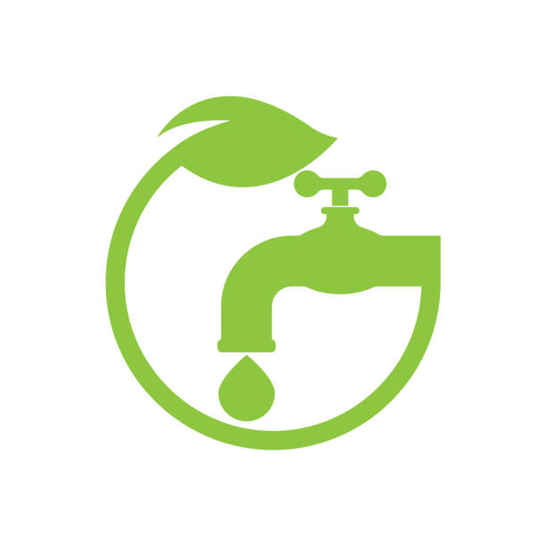
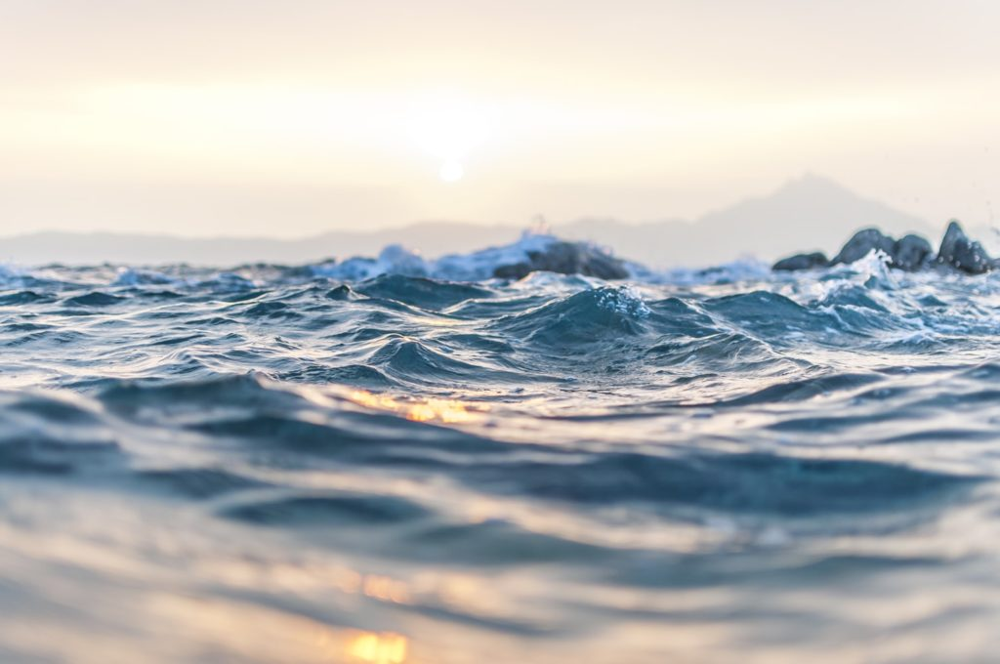
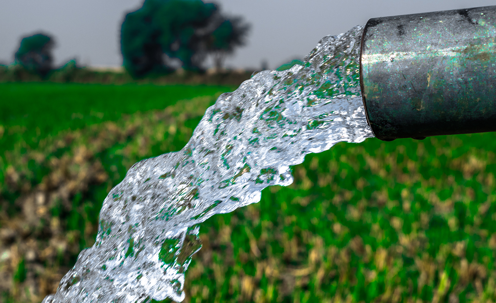
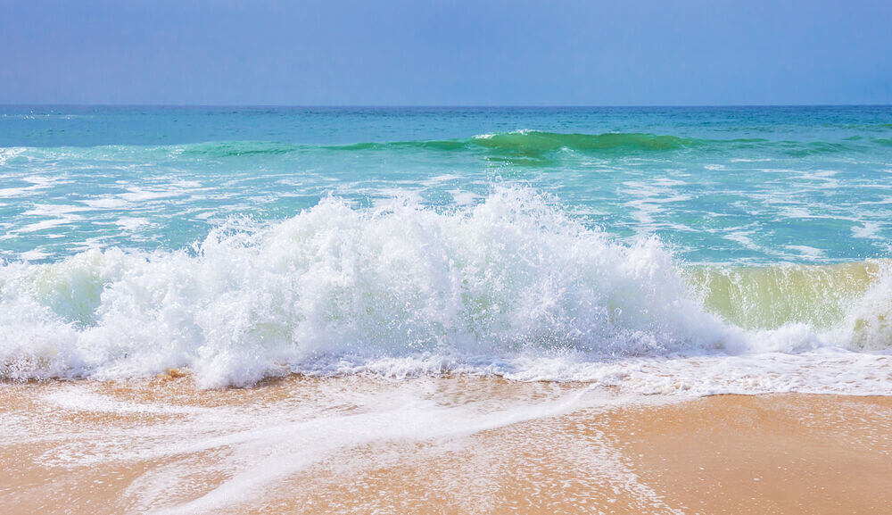
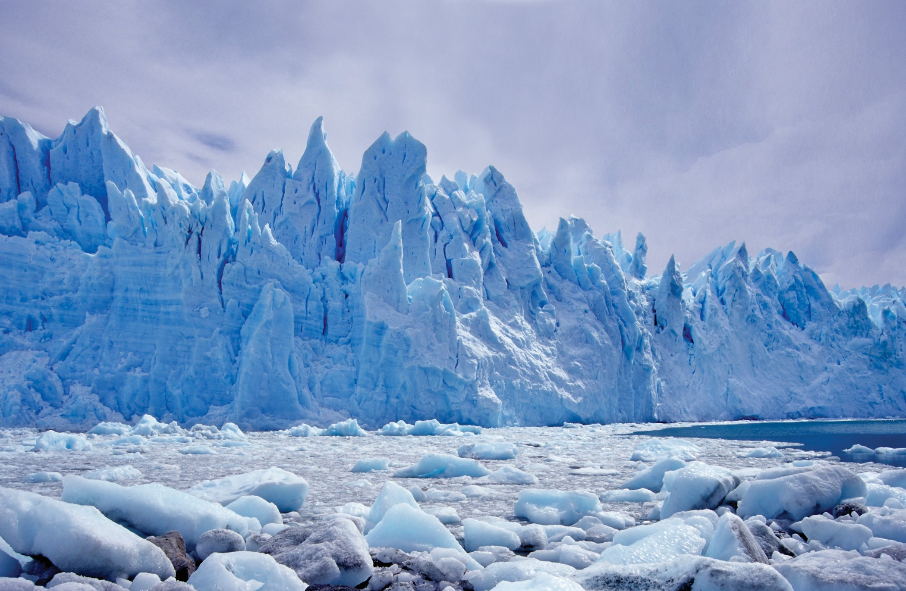
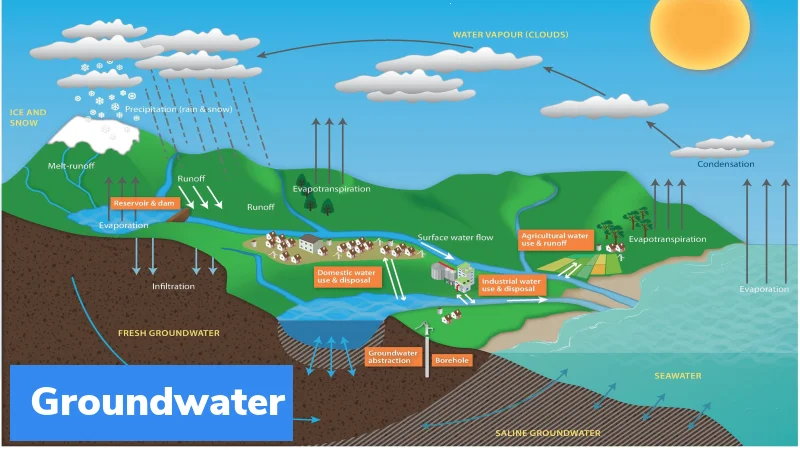
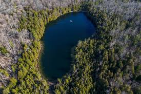
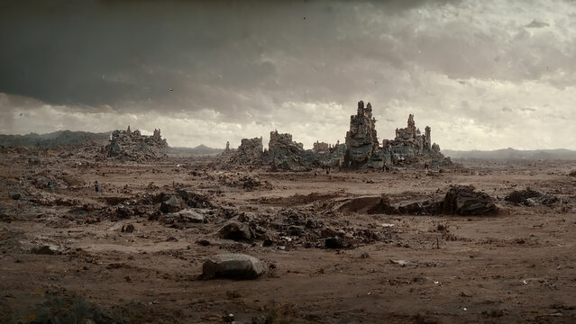

.

Water availability is the quantity of water that
can be useful to human beings without causing any harm to the ecosystem or other living creatures.
According to the statistics, almost 97% of the earth's water is saline, and among the available 3%, aquifers are considered economically useful water resources for human beings.

Water availability, both surface water and groundwater,
is crucial for various fields like agriculture, industry, energy generation and most importantly,
human consumption. Climate, local geological conditions, use of land, quality of water everything will affect the water availability.
Availability of Water on Earth
Approximately 71% of the earth’s surface is covered by water.
Water on earth can be divided into underground water and surface water.
Surface water includes water from the ocean, lakes, rivers, icetops, and glaciers.
Among these freshwater resources are water falling from the sky, lake, rivers, streams and underground water.
Underground water is the water below our feet that is more important to live. Surface water is mainly
used for agricultural needs and as drinking water, whereas groundwater helps to keep rivers and lakes full.
More than 8,400,000Km3 of freshwater is available on earth. Most of it is stored in ice caps and glaciers in the polar regions.
The water cycle has a crucial role in the availability of water on earth. Due to the water cycle, water on the earth
moves from one place to another, and because of it, water reaches animals and plants. The water cycle is driven by solar energy.
Deforestation, climate changes, the channeling and diverting of waterways, etc. can influence the water cycle and thereby the availability of water on earth.
Water Resources

The meaning of water resources is the natural resources of water that can be useful to human beings. We
are using water resources mainly as a source of drinking water and for agricultural purposes, household
activities, environmental activities, and industrial purposes. Among the available water resources oceans
are contributing 97% to the water availability. Underground water, surface water like rivers and lakes,and
"frozen water are the natural sources of freshwater."
Desalinated water and water obtained after wastewater treatments can be considered artificial water resources.
Water pollution, climate change, scarcity of water and various human activities badly affect water resources.
Availability of Water Resources
Natural water resources can be broadly classified as surface water, underground water and frozen water.
Surface water resources are oceans, lakes and rivers. Aquifers are economically useful groundwater.
Water from ice caps and glaciers belongs to the category of frozen water resources.

- Saltwater: About 97% of the earth's water is held by oceans. The sea water is salty because of
the presence of chloride and sodium ions on a large scale. Along with that, elements like calcium
magnesium, potassium, etc., are also found in seawater. Saltwater cannot be drunk directly or cannot
be used for irrigation. To use salt water for human needs, it should undergo a desalination process.
For people living in dry places, the desalination process provides much more fresh water.

- Ice- 2.06%: Most of the freshwater on earth is stored in the form of ice. In the north and south poles,
ice is found as ice caps, and in the mountains, it is found in the form of glaciers. Approximately 90%
of the earth’s ice can be seen in Antarctica.

- Groundwater- 0.9%: Groundwater has been seen in every place on the earth below our feet. During
rain, rainwater is filtered through the soil and reaches the area where it is already saturated with water.
Depending on the depth of these areas groundwater can be days to thousands of years old. Aquifers are the
places where groundwater collects in water wells and are the most economical water resources for human beings.

- Lakes- 0.008%: Lakes are formed either by the accumulation of snow or by the seeping out
of groundwater to the surface of the earth. Lakes can contain both freshwater and salty water.
Freshwater lakes are highly important for people.

- Wetlands- 0.0001%: Wetlands are formed in areas where water covers the soil for a long period
of time. Deltas, estuaries, marshes and swamps are wetlands. wetlands are places where both land-
dwelling and aquatic animals can coexist.

Contact Us
Name - Saqlain Mustaque
Phone No - 7011021869
Email - saqlainmustaquesgl@gmail.com
Save Blue. Live Green.
@water availability
@Water Availability